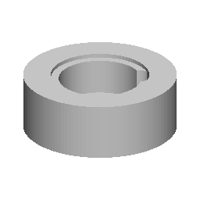
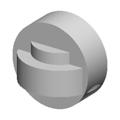
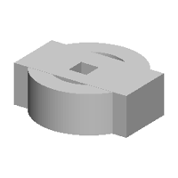
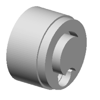

| 정답 |  | | |
| 0 | — | 실행 실패
KeyError: 'result' | 1 import cadquery as cq
2 w0=cq.Workplane('YZ',origin=(50,0,0))
3 w1=cq.Workplane('YZ',origin=(30,0,0))
4 r=w0.sketch().segment((55,1),(56,1)).arc((56,3),(55,5)).close().assemble().finalize().extrude(-120).union(w0.sketch().segment((55,20),(55,21)).arc((54,21),(55,20)).assemble().finalize().extrude(19)).union(w1.sketch().arc((-53,55),(-47,56),(-41,56)).arc((-46,58),(-53,55)).assemble().finalize().extrude(-120)) |
| 250 | — | 실행 실패
SyntaxError: unmatched ')'
1 째 줄 663 째 글자 | 1 cylinder(111,10), (56.0), (56.0), (56.0), (56.0), (56.0, 0), (56.0, 0), (56.0, 0), (56.0, 0), (56.0, 0), (56.0, 0), (56.0, 0), (56.0, 0), (56.0, 0), (56.0, 0), (56.0, 0), (56.0, 0), (56.0, 0), (56.0, 0), (56.0, 0), (56.0, 0), (56.0, 0), (56.0, 0), (56.0, 0), (56.0, 0), (56.0, 0), (56.0, 0), (56.0, 0), (56.0, 0), (56.0, 0), (56.0, 0), (56.0, 0), (56.0, 0), (56.0, 0), (56.0, 0), (56.0, 0), (56.0, 0), (56.0, 0), (56.0, 0), (56.0, 0), (56.0, 0), (56.0, 0), (56.0, 0), (56.0, 0), (56.0, 0), (56.0, 0), (56.0, 0), (56.0, 0), (56.0, 0), (56.0, 0), (56.0, 0), (56.0, 0), (56.0, 0), (56.0, 0), (56.0, 0), (56.0, 0), (56.0, 0), (56.0, 0), (56.0, 0), (56.0, 0), 56.0, 0), (56.0, 0), (56.0, 0), (56.0, 0), 56.0, 0), (56.0, 0), (56.0, 0), (56.0, 0), 56.0, 0), (56.0, 0), (56.0, 0), 56.0, 0), (56.0, 0), 56.0, 0), (56.0, 0), (56.0, 0), 56.0, 0), (56.0, 0), (56.0, 0), 56.0, 0), (56.0, 0), 56.0, 0), (56.0, 0), 56.0, 0), (56.0, 0), 56.0, 0), (56.0, 0), 56.0, 0), 56.0, 0), 56.0, 0), 0, 0),").").").").").").").").").").").").").").").").").").").").").").").").").").").").").").").").")."). "").").").")."). "").").").")."). "").").").").").")."). "").").").").")."). "").").").").").").").").").").").").").").").").").").").").").").").").").").").").").").").").").").").").").").").").").").").")."). "(b"). "").").").").").").").").").").").").").").").").").").").").").").").").").").").").").").").").").").").").").").").").").").").").").").").").").").").").").").").").B(b"). "(b").").").").").").").").").").").").").").").").").").").").").").").").").").").").").").").").").").").").").").").").").").").B(b"). " ^ |
| 500 | — | 실행 실패
SyntaxError: closing parenthesis ')' does not match opening parenthesis '['
7 째 줄 27 째 글자 | 1 b0 = place(cq.Workplane("XZ").polyline([(0.0, 0.0), (16.0, 0.0), (16.0, 10.0), (14.0, 10.0), (14.0, 16.0), (10.0, 16.0), (10.0, 20.0), (0.0, 20.0)]).close().revolve(360, (0, 0, 0), (0, 1, 0)), "z", (16.0, 0.0, -16.0))
2 b1 = place(cq.Workplane("XZ").polyline([(0.0, 0.0), (16.0, 0.0), (16.0, 16.0), (14.0, 16.0), (14.0, 20.0), (0.0, 20.0)]).close().revolve(360, (0, 0, 0), (0, 1, 0)), "z", (16.0, 0.0, 16.0))
3 b1 = place(cq.Workplane("XZ").polyline([(0.0, 0.0), (16.0, 0.0), (16.0, 16.0), (14.0, 16.0), (14.0, 20.0), (0.0, 20.0)]).close().revolve(360, (0, 0, 0), (0, 1, 0)), "z", (16.0, 0.0, -16.0))
4 b1 = place(cq.Workplane("XY").box(15.0, 20.0, 16.0, centered=(True, True, False)).faces(">Z").workplane(origin=(0, 0, 16.0)).center(10.0, -10.0).hole(16.0, 10.0, 16.0))
5 b2 = place(cq.Workplane("XY").box(15.0, 20.0, 16.0, centered=(True, True, 16.0, 0, 0, 0, 0, 0, 0, 0.0))
6 result = b0.union(b2.union(b2.union(b2.union(b2.union(b2.union(b2.union(b2.union(b2.union(b2.union(b2.workplane(origin=(0,0,0))
7 bline([(0,0),(-1,0),(-1,1)).close().extrude(-100).union(w0.sketch().circle(100).circle(100,mode='s').finalize().extrude(50)).union(w0.workplane(origin=(0,0,0)) ^
8 bline(-1.0, 0.0), (1.0, 0.0), (1.7, 0.0), (2.0, 0.0), (2.0, 16.5), (1.0, 16.5), (1.0, 20.0), (0.0, 20.0), 0.0, 16.5), -1.0, -2.7), -1.9, -2.7), -1.6, -2.7), -1.6, -2.7), -1.8, -2.7), -1.8, -2.7), -1.0, -2.7), -1.0, -2.7), -1.6, -2.7), -1.8, -2.7), -1.8, -2.7), -1.6, -2.7), -1.6, -2.7), -1.8, -2.7), -1.7, -2.7), -1.6, -2.7), -1.6, -2.7), -1.8, -2.7), -1.8, -2.7), -1.6, -2.7), -1.6, -2.7), -1.8, -2.7), -1.8, -2.7), -1.7, -2.7), -1.6, - |
| 750 | — | 실행 실패
NameError: name 'b3' is not defined
4 째 줄 | 1 b0 = place(cq.Workplane("XZ").polyline([(0.0, 0.0), (13.0, 0.0), (13.0, 10.0), (10.0, 10.0), (10.0, 25.0), (0.0, 25.0)]).close().revolve(360, (0, 0, 0), (0, 1, 0)).faces(">Z").workplane(origin=(0, 0, 25.0)).center(-1.9, -1.8).rect(10.1, 10.0).cutBlind(-16.0).faces(">Z").workplane(origin=(0, 0, 25.0)).center(-1.9, -1.8).hole(1.7), "z", (0.0, 0.0, 0.0))
2 b1 = place(cq.Workplane("XZ").polyline([(0.0, 0.0), (13.0, 0.0), (13.0, 10.0), (10.0, 10.0), (10.0, 25.0), (0.0, 25.0)]).close().revolve(360, (0, 0, 0), (0, 1, 0)), "y", (-16.0, -16.0, 0.0))
3 b2 = place(cq.Workplane("XZ").polyline([(0.0, 0.0), (13.0, 0.0), (13.0, 10.0), (10.0, 10.0), (10.0, 25.0), (0.0, 25.0)]).close().revolve(360, (0, 0, 0), (0, 1, 0)), "z", (-16.0, -16.0, 0.0))
4 result = b0.union(b1.union(b2.union(b3))) |
| 1000 | — | 실행 실패
SyntaxError: '(' was never closed
5 째 줄 18 째 글자 | 1 b0 = place(cq.Workplane("XZ").polyline([(0.0, 0.0), (18.0, 0.0), (18.0, 11.1), (10.0, 11.1), (10.0, 26.1), (0.0, 26.1)]).close().revolve(360, (0, 0, 0), (0, 1, 0)), "z", (-10.0, 0.0, -19.9))
2 b1 = place(cq.Workplane("XZ").polyline([(0.0, 0.0), (18.0, 0.0), (18.0, 11.1), (10.0, 11.1), (10.0, 26.1), (0.0, 26.1)]).close().revolve(360, (0, 0, 0), (0, 1, 0)), "z", (-10.0, 0.0, -19.9))
3 b2 = place(cq.Workplane("XZ").polyline([(0.0, 0.0), (18.0, 0.0), (18.0, 11.1), (10.0, 11.1), (10.0, 26.1), (0.0, 26.1)]).close().revolve(360, (0, 0, 0), (0, 1, 0)), "z", (-10.0, 0.0, -19.9))
4 b3 = place(cq.Workplane("XZ").polyline([(0.0, 0.0), (18.0, 0.0), (18.0, 11.1), (10.0, 11.1), (10.0, 26.1), (0.0, 26.1)]).close().revolve(360, (0, 0, 0), (0, 1, 0)), "y", (-10.0, 0.0, -19.9))
5 result = b0.union(b1.union(b2.union(b3.union(b4))) ^ |
| 1250 |  | IoU 0.44 | 1 b0 = place(cq.Workplane("XZ").polyline([(0.0, 0.0), (28.9, 0.0), (28.9, 21.0), (18.5, 21.0), (18.5, 4.9), (0.0, 4.9)]).close().revolve(360, (0, 0, 0), (0, 1, 0)).faces(">Z").workplane(origin=(0, 0, 21.0)).center(11.1, -10.1).hole(10.0), "z", (0.0, 0.0, 0.0))
2 b1 = place(cq.Workplane("XZ").polyline([(0.0, 0.0), (25.5, 0.0), (25.5, 18.0), (15.5, 18.0), (15.5, 4.9), (0.0, 4.9)]).close().revolve(360, (0, 0, 0), (0, 1, 0)).faces(">Z").workplane(origin=(0, 0, 18.0)).center(10.5, 10.0).hole(10.0), "z", (0.0, 0.0, 0.0))
3 result = b0.union(b1) |
| 1500 |  | IoU 0.58 | 1 b0 = place(cq.Workplane("XZ").polyline([(0.0, 0.0), (28.6, 0.0), (28.6, 21.0), (18.0, 21.0), (18.0, 6.8), (0.0, 6.8)]).close().revolve(360, (0, 0, 0), (0, 1, 0)).faces(">Z").workplane(origin=(0, 0, 21.0)).center(11.1, -1.1).hole(10.0, 10.0), "y", (0.0, 0.0, -15.1))
2 b1 = place(cq.Workplane("XZ").polyline([(0.0, 0.0), (26.6, 0.0), (26.6, 18.0), (18.0, 18.0), (18.0, 26.1), (0.0, 26.1)]).close().revolve(360, (0, 0, 0), (0, 1, 0)).faces(">Z").workplane(origin=(0, 0, 26.1)).center(-1.3, -1.1).hole(10.0), "z", (0.0, 0.0, -15.1))
3 b2 = place(cq.Workplane("XZ").polyline([(0.0, 0.0), (26.6, 0.0), (26.6, 21.0), (15.0, 21.0), (15.0, 6.8), (0.0, 6.8)]).close().revolve(360, (0, 0, 0), (0, 1, 0)), "y", (0.0, 0.0, -15.1))
4 result = b0.union(b1.union(b2)) |
| 1750 |  | IoU 0.40 | 1 b0 = place(cq.Workplane("XY").box(62.9, 30.1, 21.2, centered=(True, True, False)).faces(">Z").workplane(origin=(0, 0, 21.2)).center(-1.7, -1.7).rect(10.0, 10.0).cutBlind(-11.0).faces(">Z").workplane(origin=(0, 0, 21.2)).center(-1.7, -1.7).hole(10.0), "z", (0.0, 0.0, 0.0))
2 b1 = place(cq.Workplane("XZ").polyline([(0.0, 0.0), (28.1, 0.0), (28.1, 21.0), (18.0, 21.0), (18.0, 4.7), (0.0, 4.7)]).close().revolve(360, (0, 0, 0), (0, 1, 0)).faces(">Z").workplane(origin=(0, 0, 21.0)).center(-1.7, 1.7).hole(10.0, 10.0), "z", (0.0, 0.0, 0.0))
3 result = b0.union(b1) |
| 2000 | — | 실행 실패
SyntaxError: '(' was never closed
1 째 줄 11 째 글자 | 1 b0 = place(cq.Workplane("XY").add(cq.Workplane("XZ").polyline([(0.0, 0.0), (29.9, 0.0), (29.9, 31.1), (20.4, 31.1), (20.4, 7.9), (0.0, 7.9)]).close().revolve(360, (0, 0, 0), (0, 1, 0)).faces(">Z").workplane(origin=(0, 0, 31.1)).center(11.9, 1.7).rect(11.9, 11.9).cutBlind(-16.0).faces(">Z").workplane(origin=(0, 0, 31.1)).center(1.7, 1.7).rect(10.9, 10.0).cutBlind(-16.0), "z", (0.0, 0.0, 0.0)) ^
2 b1 = place(cq.Workplane("XY").box(50.0, 49.8, 24.9, centered=(True, True, False)).faces(">Z").workplane(origin=(0, 0, 24.9)).center(1.9, 1.9).hole(10.0, 10.0).edges("|Z").fillet(2.7), "z", (0.0, 0.0, 0.0))
3 result = b0.union(b1) |
| 2250 |  | IoU 0.54 | 1 b0 = place(cq.Workplane("XZ").polyline([(0.0, 0.0), (18.0, 0.0), (18.0, 19.1), (12.0, 19.1), (12.0, 4.8), (0.0, 4.8)]).close().revolve(360, (0, 0, 0), (0, 1, 0)).faces(">Z").workplane(origin=(0, 0, 19.1)).center(11.1, -1.1).hole(11.1, 10.0), "x", (0.0, 0.0, 0.0))
2 b1 = place(cq.Workplane("XZ").polyline([(0.0, 0.0), (19.0, 0.0), (19.0, 18.0), (10.0, 18.0), (10.0, 26.1), (0.0, 26.1)]).close().revolve(360, (0, 0, 0), (0, 1, 0)).faces(">Z").workplane(origin=(0, 0, 26.1)).center(11.1, -1.1).hole(10.0, 10.0), "x", (0.0, 0.0, 0.0))
3 result = b0.union(b1) |
| 2500 | — | 실행 실패
SyntaxError: '(' was never closed
1 째 줄 11 째 글자 | 1 b0 = place(cq.Workplane("XY").add(cq.Workplane("XZ").polyline([(0.0, 0.0), (28.1, 0.0), (28.1, 29.6), (17.5, 29.6), (17.5, 10.8), (0.0, 10.8)]).close().revolve(360, (0, 0, 0), (0, 1, 0)).faces(">Z").workplane(origin=(0, 0, 29.6)).center(11.1, 10.5).rect(11.9, 11.1).cutBlind(-11.0), "z", (0.0, 0.0, 0.0)) ^
2 b1 = place(cq.Workplane("XY").box(40.8, 29.6, 20.9, centered=(True, True, False)).faces(">Z").workplane(origin=(0, 0, 20.9)).center(1.7, 1.7).hole(10.0, 8.8).faces(">Z").workplane(origin=(0, 0, 20.9)).center(1.7, -1.8).hole(10.0, 10.6), "z", (0.0, 0.0, 0.0))
3 result = b0.union(b1) |
| 2750 | — | 실행 실패
SyntaxError: '(' was never closed
1 째 줄 11 째 글자 | 1 b0 = place(cq.Workplane("XY").add(cq.Workplane("XZ").polyline([(0.0, 0.0), (28.1, 0.0), (28.1, 24.1), (17.1, 24.1), (17.1, 8.0), (0.0, 8.0)]).close().revolve(360, (0, 0, 0), (0, 1, 0)).faces(">Z").workplane(origin=(0, 0, 24.1)).center(11.1, -1.1).rect(11.9, 10.0).cutBlind(-16.2).faces(">Z").workplane(origin=(0, 0, 24.1)).center(11.1, -1.8).rect(11.9, 10.0).cutBlind(-11.1), "z", (0.0, 0.0, 13.0)) ^
2 b1 = place(cq.Workplane("XY").box(42.4, 30.1, 20.2, centered=(True, True, False)).faces(">Z").workplane(origin=(0, 0, 20.2)).center(10.0, -10.1).hole(10.0, 8.8).faces(">Z").workplane(origin=(0, 0, 20.2)).center(10.0, -10.1).hole(10.0, 10.0), "z", (0.0, 0.0, -13.0))
3 result = b0.union(b1) |
| 3000 | — | 실행 실패
SyntaxError: '(' was never closed
1 째 줄 11 째 글자 | 1 b0 = place(cq.Workplane("XY").add(cq.Workplane("XZ").polyline([(0.0, 0.0), (29.6, 0.0), (29.6, 23.1), (17.1, 23.1), (17.1, 8.1), (0.0, 8.1)]).close().revolve(360, (0, 0, 0), (0, 1, 0)).faces(">Z").workplane(origin=(0, 0, 23.1)).center(11.1, -1.1).rect(11.9, 10.8).cutBlind(-16.2).faces(">Z").workplane(origin=(0, 0, 23.1)).center(11.1, -1.8).rect(11.9, 10.8).cutBlind(-16.2), "z", (0.0, 0.0, 0.0)) ^
2 b1 = place(cq.Workplane("XY").box(42.4, 29.1, 14.9, centered=(True, True, False)).faces(">Z").workplane(origin=(0, 0, 14.9)).center(10.0, -1.8).hole(10.0, 8.8).edges("|Z").fillet(2.7), "z", (0.0, 0.0, 0.0))
3 result = b0.union(b1) |